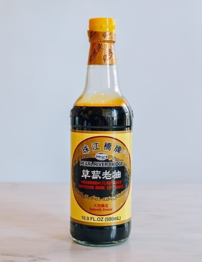

“Why are there no precise measurements?” My dad has always just winged it, so ingredient amounts will be by ratio, not by measurements. It’s just how we roll.
 Cooking Wine: Dad uses Rice Wine, the clear stuff, not the dark brown stuff. You could also substitute it for Mirin for a sweeter taste.
Cooking Wine: Dad uses Rice Wine, the clear stuff, not the dark brown stuff. You could also substitute it for Mirin for a sweeter taste.
Dark Soy Sauce: There’s 2 kinds of soy sauce used in Chinese cooking- light is the common stuff, and then dark is the super secret special stuff (not that super secret). There IS a difference and it DOES matter, so you do have to get the dark mushroom soy sauce from the store.
 Green Onions: Definitely not chives or leeks, but specifically green onions. Dad yells at me for suggesting they could possibly be interchangable (I think they are), so I'm putting this on the page at his request..
Green Onions: Definitely not chives or leeks, but specifically green onions. Dad yells at me for suggesting they could possibly be interchangable (I think they are), so I'm putting this on the page at his request..